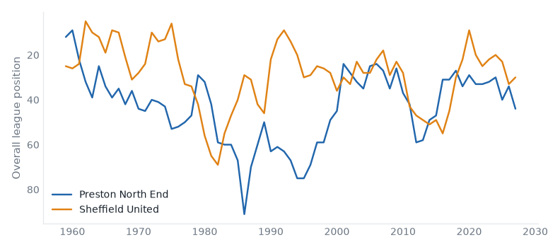
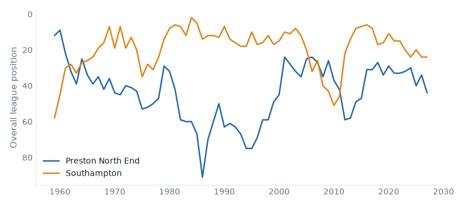

Premier League and Championship, 02 November to 08 November 2026. 35 results.Friday's preview.
Brighton 2–0 Brentford. Friday's case: 2 above level, neighbours, yo-yo club. Brighton up from 3rd to 2nd; Brentford down from 6th to 8th.
Ipswich 1–2 Bournemouth. Friday's case: 2 above level, yo-yo club, promoted last season. Ipswich stay 14th; Bournemouth up from 8th to 7th.
Fulham 1–1 Newcastle. Friday's case: above level, neighbours, yo-yo club. Fulham stay 15th; Newcastle up from 13th to 12th.
QPR 2–1 Lincoln. Friday's case: 2 above level, yo-yo club, champions last season. QPR up from 11th to 8th; Lincoln down from 19th to 21st.
Birmingham 2–1 Swansea. Friday's case: above level, neighbours, yo-yo club. Birmingham up from 4th to 1st; Swansea down from 6th to 7th.
Wrexham 1–1 Wolves. Friday's case: 2 above level, yo-yo club, relegated last season. Wrexham up from 16th to 15th; Wolves down from 3rd to 5th.
Arsenal 1–0 Hull. Friday's case: above level, yo-yo club, champions last season. Arsenal stay 1st; Hull down from 11th to 13th.
Bristol City 0–5 Norwich. Friday's case: neighbours, yo-yo club. Bristol City down from 15th to 17th; Norwich stay 12th.
Sunderland 1–0 Chelsea. Friday's case: above level, yo-yo club. Sunderland up from 20th to 19th; Chelsea down from 4th to 5th.
Crystal Palace 1–3 Liverpool. Friday's case: above level, yo-yo club. Crystal Palace down from 18th to 20th; Liverpool up from 5th to 4th.
Leeds 1–0 Tottenham. Friday's case: neighbours, yo-yo club. Leeds up from 12th to 9th; Tottenham down from 9th to 11th.
West Brom 3–0 Millwall. Friday's case: below level, yo-yo club. West Brom up from 7th to 6th; Millwall down from 13th to 16th.
Preston 2–3 Sheffield United compare
Championship, Tue 03 Nov
Preston North End have 5 points from 14 games, their worst start in their record.

Preston 1–0 Southampton compare
Championship, Sat 07 Nov
Preston North End have 8 points from 15 games, their worst start in their record. Southampton have 28 points from 15 games, their best start since 2011/12.

Watford 1–0 Lincoln compare
Championship, Tue 03 Nov
Watford beat Lincoln City for the first time since 1978/79. Lincoln City have 15 points from 14 games, their worst start since 2012/13.
West Brom 1–1 Southampton compare
Championship, Tue 03 Nov
Southampton have 28 points from 14 games, their best start since 2011/12.
Wrexham 2–0 Middlesbrough compare
Championship, Wed 04 Nov
Middlesbrough have 28 points from 14 games, their best start since 2012/13.
Everton 3–1 Coventry compare
Premier League, Fri 06 Nov
Everton beat Coventry City for the first time since 2000/01.
Arsenal 1–0 Hull compare
Premier League, Sat 07 Nov
Arsenal beat Hull City for the first time since 2016/17.
Blackburn 2–1 West Ham compare
Championship, Sat 07 Nov
Blackburn Rovers beat West Ham United for the first time since 2005/06.
Cardiff 5–4 Burnley compare
Championship, Sat 07 Nov
Cardiff City beat Burnley for the first time since 2012/13.
Portsmouth 1–2 Stoke compare
Championship, Sat 07 Nov
Stoke City have 29 points from 15 games, their best start since 2001/02.
QPR 2–1 Lincoln compare
Championship, Sat 07 Nov
Lincoln City have 15 points from 15 games, their worst start since 2011/12.
Brighton 2–0 Brentford compare
Premier League, Sun 08 Nov
Brighton & Hove Albion have 22 points from 10 games, their best start since 2015/16.
Man United 4–4 Aston Villa compare
Premier League, Sun 08 Nov
Manchester United have 8 points from 10 games, their worst start since 1986/87.
| Mon 02 | Newcastle | 0–1 | Everton | ↑1 ↑1 | compare | best start since 2021/22 |
| Fri 06 | Everton | 3–1 | Coventry | ↑1 ↓1 | compare | first win v Coventry City since 2000/01 |
| Sat 07 | Arsenal | 1–0 | Hull | ↓2 | compare | first win v Hull City since 2016/17 |
| Sat 07 | Fulham | 1–1 | Newcastle | ↑1 | compare | worst start since 2020/21 |
| Sat 07 | Leeds | 1–0 | Tottenham | ↑3 ↓2 | compare | first win v Tottenham Hotspur since 2020/21 |
| Sat 07 | Nott'm Forest | 3–1 | Man City | ↑3 ↓1 | compare | |
| Sun 08 | Brighton | 2–0 | Brentford | ↑1 ↓2 | compare | best start since 2015/16 |
| Sun 08 | Crystal Palace | 1–3 | Liverpool | ↓2 ↑1 | compare | |
| Sun 08 | Ipswich | 1–2 | Bournemouth | ↑1 | compare | |
| Sun 08 | Man United | 4–4 | Aston Villa | ↓1 | compare | worst start since 1986/87 |
| Sun 08 | Sunderland | 1–0 | Chelsea | ↑1 ↓1 | compare | worst start since 2017/18 |
| P | W | D | L | GD | Pts | ||
|---|---|---|---|---|---|---|---|
| 1 | Liverpool | 5 | 4 | 1 | 0 | +6 | 13 |
| 2 | Arsenal | 5 | 4 | 0 | 1 | +2 | 12 |
| 3 | Brighton & Hove Albion | 5 | 3 | 0 | 2 | +5 | 9 |
| 4 | Manchester City | 5 | 3 | 0 | 2 | +4 | 9 |
| 5 | Aston Villa | 5 | 2 | 2 | 1 | -2 | 8 |
| 6 | Bournemouth | 5 | 2 | 1 | 2 | -1 | 7 |
| 7 | Newcastle United | 5 | 2 | 1 | 2 | -2 | 7 |
| 8 | Everton | 5 | 1 | 3 | 1 | -1 | 6 |
| 9 | Chelsea | 5 | 2 | 0 | 3 | -2 | 6 |
| 10 | Fulham | 5 | 1 | 2 | 2 | -1 | 5 |
| 11 | Leeds United | 5 | 1 | 2 | 2 | -2 | 5 |
| 12 | Tottenham Hotspur | 5 | 1 | 2 | 2 | -2 | 5 |
| 13 | Nottingham Forest | 5 | 1 | 2 | 2 | -3 | 5 |
| 14 | Brentford | 5 | 0 | 4 | 1 | -2 | 4 |
| 15 | Hull City | 5 | 1 | 1 | 3 | -2 | 4 |
| 16 | Ipswich Town | 5 | 1 | 1 | 3 | -4 | 4 |
| 17 | Crystal Palace | 5 | 1 | 1 | 3 | -8 | 4 |
| 18 | Manchester United | 5 | 0 | 3 | 2 | -4 | 3 |
| 19 | Coventry City | 5 | 1 | 0 | 4 | -7 | 3 |
| 20 | Sunderland | 5 | 0 | 1 | 4 | -7 | 1 |
| Tue 03 | Birmingham | 3–0 | Millwall | ↑3 ↓3 | compare | |
| Tue 03 | Blackburn | 1–2 | Stoke | ↑1 ↑2 | compare | |
| Tue 03 | Charlton | 0–1 | Bolton | ↑2 ↓1 | compare | worst start since 2019/20 |
| Tue 03 | Derby | 0–4 | Norwich | compare | worst start since 2020/21 | |
| Tue 03 | Portsmouth | 3–1 | Swansea | ↓1 ↓1 | compare | best start since 2020/21 |
| Tue 03 | Preston | 2–3 | Sheffield United | ↓1 | compare | worst start on record |
| Tue 03 | QPR | 1–1 | Burnley | ↑3 | compare | |
| Tue 03 | Watford | 1–0 | Lincoln | ↓2 | compare | first win v Lincoln City since 1978/79 |
| Tue 03 | West Brom | 1–1 | Southampton | ↑1 ↓3 | compare | best start since 2011/12 |
| Wed 04 | Bristol City | 1–2 | Wolves | ↓2 ↓2 | compare | first win v Bristol City since 2017/18 |
| Wed 04 | Cardiff | 3–3 | West Ham | ↑4 ↓1 | compare | best start since 2021/22 |
| Wed 04 | Wrexham | 2–0 | Middlesbrough | ↑1 | compare | best start since 2012/13 |
| Fri 06 | Derby | 3–1 | Bolton | ↓1 | compare | worst start since 2019/20 |
| Sat 07 | Birmingham | 2–1 | Swansea | ↑3 ↓1 | compare | best start since 2020/21 |
| Sat 07 | Blackburn | 2–1 | West Ham | ↑1 ↓1 | compare | first win v West Ham United since 2005/06 |
| Sat 07 | Bristol City | 0–5 | Norwich | ↓2 | compare | |
| Sat 07 | Cardiff | 5–4 | Burnley | ↑4 | compare | first win v Burnley since 2012/13 |
| Sat 07 | Charlton | 2–1 | Sheffield United | ↑2 ↓1 | compare | worst start since 2021/22 |
| Sat 07 | Portsmouth | 1–2 | Stoke | ↓1 ↑2 | compare | best start since 2001/02 |
| Sat 07 | Preston | 1–0 | Southampton | ↓3 | compare | worst start on record |
| Sat 07 | QPR | 2–1 | Lincoln | ↑3 ↓2 | compare | worst start since 2011/12 |
| Sat 07 | Watford | 0–0 | Middlesbrough | compare | worst start since 2021/22 | |
| Sat 07 | West Brom | 3–0 | Millwall | ↑1 ↓3 | compare | first win v Millwall since 2019/20 |
| Sat 07 | Wrexham | 1–1 | Wolves | ↑1 ↓2 | compare | best start since 2017/18 |
| P | W | D | L | GD | Pts | ||
|---|---|---|---|---|---|---|---|
| 1 | Stoke City | 8 | 5 | 1 | 2 | 0 | 16 |
| 2 | Wolverhampton Wanderers | 8 | 4 | 2 | 2 | +2 | 14 |
| 3 | West Ham United | 8 | 3 | 4 | 1 | +7 | 13 |
| 4 | Birmingham City | 7 | 4 | 1 | 2 | +3 | 13 |
| 5 | West Bromwich Albion | 7 | 4 | 1 | 2 | +2 | 13 |
| 6 | Norwich City | 8 | 4 | 0 | 4 | +7 | 12 |
| 7 | Middlesbrough | 8 | 3 | 3 | 2 | +3 | 12 |
| 8 | Bristol City | 7 | 3 | 3 | 1 | +1 | 12 |
| 9 | Swansea City | 8 | 4 | 0 | 4 | -4 | 12 |
| 10 | Sheffield United | 8 | 3 | 2 | 3 | 0 | 11 |
| 11 | Bolton Wanderers | 8 | 3 | 2 | 3 | -3 | 11 |
| 12 | Lincoln City | 8 | 3 | 1 | 4 | -3 | 10 |
| 13 | Portsmouth | 7 | 2 | 3 | 2 | +1 | 9 |
| 14 | Southampton | 8 | 2 | 3 | 3 | -1 | 9 |
| 15 | Queens Park Rangers | 7 | 2 | 3 | 2 | -3 | 9 |
| 16 | Millwall | 8 | 2 | 1 | 5 | -10 | 7 |
| 17 | Blackburn Rovers | 7 | 1 | 3 | 3 | -5 | 6 |
| 18 | Wrexham | 7 | 1 | 3 | 3 | -6 | 6 |
| 19 | Burnley | 8 | 1 | 2 | 5 | -7 | 5 |
| 20 | Derby County | 7 | 1 | 2 | 4 | -8 | 5 |
| 21 | Charlton Athletic | 7 | 1 | 2 | 4 | -10 | 5 |
| 22 | Cardiff City | 7 | 0 | 2 | 5 | -8 | 2 |
| 23 | Watford | 7 | 0 | 1 | 6 | -10 | 1 |
| 24 | Preston North End | 7 | 0 | 1 | 6 | -12 | 1 |
Built from the English football database, tiers 1–5 from 1958/59. Results from football-data.co.uk. Archived copy.